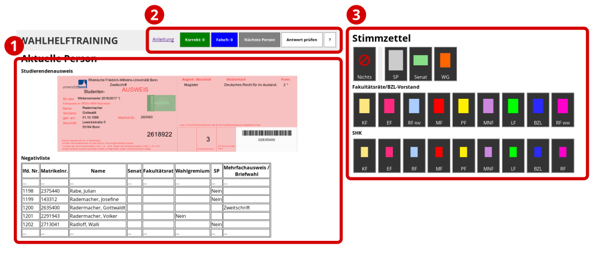

WAHLHELFTRAINING
Zurück zum TrainingAnleitung
Diese Trainingswebseite ist gedacht für Wahlhelferinnen und Wahlhelfer der Studierendenparlaments- und Gremienwahlen im Januar 2019. Mit ihr könnt ihr üben, anhand des Studierendenausweises einer Person und der Negativliste die richtigen Stimmzettel auszuwählen, die auszuhändigen sind.
Bedienelemente
In Bereich 1 werden euch ein Studierendenausweis und ein Auszug aus der Negativliste angezeigt.
In Bereich 2 könnt ihr sehen, wie oft ihr bereits richtig und falsch gelegen habt, ihr könnt die nächste Testperson aufrufen, eure eingegebene Antwort prüfen und durch Klick auf [?] die korrekte Antwort anzeigen lassen.
In Bereich 3 wählt ihr aus, welche Stimmzettel ihr der Person aushändigen wollt.
Spiel und Spaß
Gespielt wird folgendermaßen: Ihr prüft den Ausweis und ggf. den Eintrag in der Negativliste, und entscheidet, welche Stimmzettel ihr der Person aushändigen wollt. Falls die Person keine Zettel bekommen soll, klickt ihr auf "Nichts", andernfalls auf alle Stimmzettel, die ihr ausgeben wollt. Ein ausgewählter Stimmzettel ändert die Farbe. Um einen Stimmzettel wieder abzuwählen, klickt ihn einfach erneut an.
Um eure Eingabe überprüfen zu lassen, klickt ihr oben auf "Antwort prüfen". Falls ihr richtig liegt, leuchtet der Hintergrund grün auf, ein Ton ertönt und der Korrekt-Zähler erhöht sich um 1. Falls ihr falsch liegt, leuchtet der Hintergrund blau auf, ein anderer Ton ertönt, und der Falsch-Zähler erhöht sich.
Um euch die korrekte Antwort anzeigen zu lassen, könnt ihr auf die Schaltfläche mit dem Fragezeichen klicken.
Um mit der nächsten Person fortzufahren, klickt auf die Schaltfläche "Nächste Person".
Die Negativliste
Die Negativliste enthält folgende Spalten:
- lfd. Nr.
- Laufende Nummer im Verzeichnis
- Matrikelnr.
- Matrikelnummer der Person
- Name
- Nachname und Vorname der Person
- Senat
- Falls die Person keine Wahlberechtigung für den Senat hat, steht hier ein "Nein". Bedeutet auch, dass keiner der anderen Gremienzettel ausgeteilt wird.
- Fakultätsrat
- Falls die Person keine Wahlberechtigung für den Fakultätsrat ihrer Fakultät bzw. den Vorstand des BZL hat, steht hier ein "Nein". Falls in der Spalte "Senat" ein "Nein" steht, wird auch kein Stimmzettel für den Fakultätsrat / BZL-Vorstand ausgegeben!
- Wahlgremium
- Falls die Person keine Wahlberechtigung für die Wahl des Wahlgremiums der zentralen Gleichstellungsbeauftragten und ihrer Stellvertreterinnen hat, steht hier ein "Nein". Personen mit "Studenten-"-Ausweis dürfen das Wahlgremium generell nicht wählen, haben hier aber i.d.R. kein "Nein" stehen.
Falls in der Spalte "Senat" ein "Nein" steht, wird auch kein Stimmzettel für das Wahlgremium ausgegeben!
Auf Weiterbildungsausweisen ist auf der Rückseite der Vermerk "w" (weiblich, bekommt einen Stimmzettel) oder "m" (nicht weiblich, bekommt keinen Stimmzettel) aufgedruckt. - SP
- Falls die Person keine Wahlberechtigung für das Studierendenparlament hat, steht hier ein "Nein".
- Mehrfachausweis Briefwahl
- Falls die Person eine Mehrfachausfertigung (Zweitschrift, Drittschrift, …) ihres Ausweises besitzt, steht dies hier. Falls die Person Briefwahl beantragt hat, steht dies ebenfalls hier. In den entsprechenden Spalten davor ist dann ebenfalls ein "Nein" eingetragen.
Betrug!!!
Falls ihr glaubt, einen Fehler gefunden zu haben, schreibt doch eine E-Mail an den Wahlausschuss (mit Angabe des Namens auf dem fehlerhaften Studierendenausweis).
Achtung: Die Fach-Abschluss-Kombinationen sowie die Anschriften sind lediglich "halbwegs plausibel" generiert und müssen nicht unbedingt wirklich so existieren. Sie sind lediglich dekorativ und für die Ausgabe der Stimmzettel komplett irrelevant. Also schreibt uns bitte keine E-Mail, wenn ihr meint, dass es eine bestimmte Fachkombination so nicht gibt. Das wird dann wohl richtig sein.
Verwendete Sounddateien
"Failure 01" von rhodesmas auf freesound.org, unter CC-BY 3.0
"success_low.wav" von grunz auf freesound.org, unter CC-BY 3.0